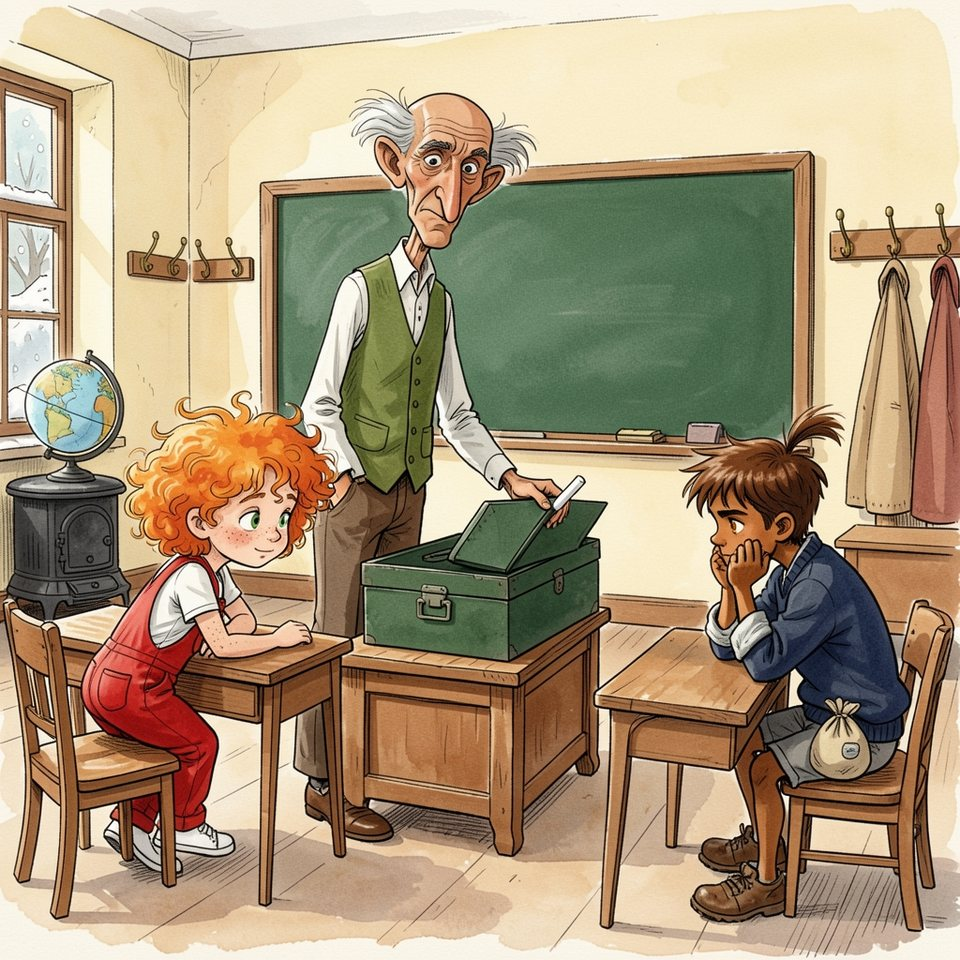

Titistoire › Les Comètes (6-8 ans)
La Filante a disparu
Une année à Virevent, l'histoire du mois de décembre : Jeanne, Gaspard, Suzie et Marin.

▶ Écouter et regarder l'histoire
Gratuit, sans inscription : la voix lit, le texte suit mot à mot, les images tournent comme dans un album.
Le texte de l'histoire
Ce vendredi de décembre, Virevent s'était réveillée sous la neige, et le poêle de la classe ronflait comme un gros chat. Monsieur Grison remonta l'allée ; sa poche de gilet fit cling-cling, comme toujours.
Sur son bureau trônait la boîte du vendredi : ce qu'il confisquait y dormait jusqu'à la fin de la semaine, quatre heures tapantes. Depuis lundi, la Filante y dormait aussi.
C'était la plus belle bille de l'école, claire comme de l'eau, un tourbillon blanc au milieu. Jeanne l'avait fait rouler en pleine dictée, pour prouver qu'elle tombait d'une vraie comète.
Ce matin-là, le maître souleva le couvercle pour y jeter une toupie à pointe de fer. La bille luisait au fond, bien sage. « Une pointe à rayer les vitres », marmonna-t-il.
Au dernier rang, Raoul guettait la boîte comme un chat guette un bocal. Pour la Filante, il avait offert dix billes, puis vingt. Au beffroi, dix heures sonnèrent, à dix heures cinq.
À la récréation, pendant que la cour bâtissait un bonhomme de neige, Gaspard suivit Raoul derrière le cerisier. Là, le gros tronc noir cachait les joueurs à toute l'école.
Raoul avait balayé un carré de sable. Il jouait pour de vrai : ce qu'il gagnait, il le gardait, et son sac pendait à sa ceinture, rond comme une joue.
« Quatre », compta Gaspard, quand sa quatrième bille disparut dans le sac. Avec les onze perdues depuis la rentrée, cela faisait quinze. Son carnet avait une colonne pour cela.
« Alors, le Notaire, on fait ses comptes ? » Raoul fit sauter le sac dans sa main. « Je te les rejoue toutes les quinze, d'un coup. Contre ton agate. »
L'agate. Brune et dorée, rayée comme un tigre. Son grand-père la lui avait donnée pour ses sept ans, et Gaspard avait juré de ne jamais la miser. Toute l'école le savait.
Quinze billes contre une : c'était un bon compte. Et Raoul finirait bien par manquer un coup, c'était mathématique. Sa main sortit l'agate avant qu'il ait fini de réfléchir.
Il la posa au milieu du carré. Elle était encore tiède. Raoul s'allongea dans la neige, ferma un œil, plia le pouce. Gaspard eut le temps de penser : il va la manquer.
Tac. L'agate roula hors du carré, et la main de Raoul se referma dessus. « Elle est belle. Je comprends que tu aies juré. » Le sac l'avala avec un bruit de gravier.
La cloche sonna. Gaspard rentra le dernier, la poche légère, les oreilles brûlantes. Monsieur Grison regagna l'estrade ; sa poche fit cling-cling… toc. Gaspard n'entendait que son agate, qui tombait encore dans le sac de Raoul.
Quatre heures sonnèrent enfin, avec leurs cinq minutes de retard. Monsieur Grison ouvrit la boîte et rendit chaque chose à son propriétaire : un sifflet, deux élastiques, la toupie.
« Et pour mademoiselle Jeanne… » Sa grande main tâtonna au fond, une fois, deux fois. Puis il retourna la boîte au-dessus du bureau. Il n'en tomba qu'un bouton.
« Ma Filante ! On me l'a volée ! » Jeanne avait bondi sur son banc. « Je le sentais depuis ce matin : j'avais comme un courant d'air dans le cœur ! »
« À dix heures, elle y était, rappela le maître. Et je ne me suis absenté qu'à la récréation, pour aller au tas de bois. » Les têtes se tournèrent vers le dernier rang.
« Raoul la voulait ! Il m'en offrait vingt billes ! » Les joues de Jeanne se gonflèrent. « Cent ! Et à la récréation, je l'ai cherché partout : il n'était nulle part ! »
Monsieur Grison descendit de l'estrade. « J'ai deux oreilles, Raoul : une pour chaque version. J'ai entendu celle de Jeanne. J'attends la tienne. Où étais-tu ? »
Raoul regarda Gaspard. Une seconde, pas davantage. Gaspard se découvrit une passion pour le bois de son pupitre. Alors Raoul haussa les épaules. « À quoi bon. On ne me croit jamais. »
« Dans ce cas, trancha le maître, tant que la Filante n'aura pas reparu, pas de manège illuminé pour toi, demain soir. » Demain, c'était la fête d'hiver, le dernier tour avant le printemps.
Raoul ne broncha pas. Gaspard aurait dû se réjouir. Seulement, il avait compté : de toute la récréation, Raoul n'avait pas quitté le carré de sable. Et Gaspard était seul à le savoir.
Mais le dire, c'était dire l'agate, le serment, la défaite. Devant tout le monde. Alors il ouvrit son carnet et écrivit : « Trouver le vrai coupable. »
« Une enquête ! » Jeanne battit des mains. « J'allais te le proposer ! » Le jour baissait déjà sur la cour blanche. Gaspard s'accroupit sous les fenêtres de la classe, carnet ouvert.
« Premièrement, les traces. Deuxièmement, les témoins. Troisi… » « C'est la pie du beffroi ! coupa Jeanne. Les pies adorent ce qui brille. Elle a soulevé le couvercle avec son bec, et hop ! »
Marin, qui passait, s'arrêta. « Une pie qui ouvre une boîte en fer et la referme derrière elle. Il faudra me la présenter. » Gaspard raya la pie.
« Alors elle a fondu dans le poêle ! » Gaspard secoua la tête. « Le verre ne fond pas dans un poêle d'école. » Il raya le poêle. Sous la fenêtre, de grandes empreintes menaient au tas de bois.
Jeanne y vit un géant ; Gaspard, les galoches du maître. Il nota : « Dans la classe à la récréation : personne, sauf le maître. » Le maître, évidemment, ne comptait pas.
En rentrant, Gaspard traversa la place du Beffroi. Sous les platanes nus, le père Anselme accrochait les dernières ampoules à son manège de lunes et de fusées.
Quelqu'un regardait, immobile, les mains enfoncées dans les manches d'un chandail trop grand. Raoul. Il ne regardait pas tout le manège : il regardait la fusée rouge.
Gaspard s'approcha. « Tu pourrais raconter où tu étais. » Raoul ne se retourna pas. « Toi aussi. » Un flocon se posa sur l'épi de ses cheveux, et y resta.
« Tu n'as qu'à… » « Je n'ai qu'à rien du tout, le Notaire. Un manège, ça tourne en rond. Je m'en moque. » Il le disait à la fusée rouge, qui n'avait pas l'air de le croire.
Il s'en alla sans se presser, son sac sonnant contre sa hanche. Gaspard resta devant les ampoules éteintes, avec dans le ventre quelque chose de dur, à peu près du poids d'une agate.
Le samedi matin, Gaspard arriva à l'école les yeux tout petits. Il avait rayé toute la soirée : la pie, le poêle, le géant, et même un courant d'air que Jeanne jugeait suspect.
« Vous n'allez pas me croire ! » Elle déboulait, l'écharpe au vent. « C'est Madame Bogue ! Elle garde bien les ballons dans son panier : elle a pu garder ma bille ! »
« Madame Bogue dort le matin. » « Elle est somnambule ! » En face de l'école, un volet claqua : « Pas avant midi ! » Jeanne rentra la tête dans les épaules, et Gaspard raya Madame Bogue.
« Alors il ne reste qu'une explication. » Elle leva le nez vers le beffroi. « Une Filante, ça retourne à sa comète. Regarde la girouette : elle brille mieux qu'hier. Juré-craché-mouillé. »
Gaspard contempla sa page. Onze lignes, onze ratures. Il en restait une douzième, tout en bas, qu'il n'avait pas écrite. C'était la seule vraie. La cloche sonna.
Ce matin-là, on faisait du calcul, et pour la première fois de sa vie Gaspard ne comptait rien. Au dernier rang, Raoul regardait tomber la neige. Ce soir, les ampoules s'allumeraient sans lui.
Monsieur Grison passait entre les pupitres, les mains dans le dos. Cling-cling… toc. Il s'arrêta, repartit. Cling-cling… toc. Le crayon de Gaspard resta en l'air.
Toc ? Lundi, la poche faisait cling-cling. Hier matin encore. Les craies font cling. Les clés font cling. Qu'est-ce qui, dans une poche de maître, peut bien faire toc ?
Quelque chose de rond. Quelque chose de lourd, qui roule au fond et vient cogner. Le cœur de Gaspard cogna aussi. Il leva la main si vite que son banc grinça.
« Monsieur. Votre poche ne fait pas son bruit. » « Ma poche se porte à merveille, Gaspard. On ne fouille pas le gilet d'un maître pour un bruit. Il me faudrait une meilleure raison. »
Une meilleure raison. Gaspard en avait une, tout en bas de sa page. Il se leva. Ses genoux n'étaient pas d'accord. Toute la classe pivota vers lui.
« Premièrement, Raoul n'a pas pu prendre la bille. À la récréation, il était derrière le cerisier. Du début à la fin. J'ai compté. » Il avala sa salive. « J'y étais. »
« Deuxièmement, on jouait pour de vrai. J'ai misé l'agate de mon grand-père. Celle que j'avais juré de ne jamais miser. » On entendit ronfler le poêle. « Troisièmement, j'ai perdu. »
Pour une fois, Jeanne ne l'avait pas interrompu avant troisièmement. Elle avait la bouche ouverte, et rien n'en sortait. Au dernier rang, Raoul ne regardait plus la neige.
Monsieur Grison resta un moment immobile. Puis il glissa deux doigts dans sa poche. Une craie. Une clé. Et ses grandes oreilles rougirent, l'une après l'autre : entre ses doigts brillait la Filante.
« Je l'ai ôtée de la boîte hier, à la récréation. Cette toupie l'aurait rayée. Je l'ai mise à l'abri dans mon gilet… et je l'y ai oubliée. » Il rendit la bille à Jeanne, qui l'embrassa.
Puis il marcha jusqu'au dernier rang, et sa poche ne fit plus que cling-cling. « J'ai deux oreilles, Raoul. Hier, elles n'ont écouté qu'une version : la mienne. Je me suis trompé. Je te demande pardon. »
Il le dit tout haut, devant la classe entière, penché si bas que ses touffes grises frôlaient l'épi de Raoul. « Ce soir, le premier tour de manège sera pour toi. »
Jeanne se racla la gorge. « Vingt. Il m'en offrait vingt. Pas cent. » Venant d'elle, c'était énorme. Raoul marmonna quelque chose qui n'était ni oui, ni merci.
À midi, il s'arrêta devant le pupitre de Gaspard et y laissa tomber son sac, avec un bruit de gravier. « Ta revanche. Quand tu veux. » Puis il eut son sourire de travers, et reprit son bien.
Le soir tomba sur Virevent, bleu et blanc. Madame Bogue alluma les réverbères ; le père Anselme cala ses épaules dans sa bricole de cuir, et le manège illuminé se mit à tourner.
Le premier tour fut pour Raoul. Il avait choisi la fusée rouge. Il serrait la bouche pour ne pas sourire, et il n'y arrivait pas du tout.
Jeanne levait la Filante aux lumières. « Une nuit dans la poche d'un maître, ça vous change une bille. » Puis, sans le regarder : « Tu as vraiment misé l'agate ? » « Vraiment. » « Eh bien. »
Au troisième tour, Raoul leva quelque chose entre deux doigts : une bille brune et dorée, rayée comme un tigre. Gaspard plia le pouce contre l'index, et s'entraîna à tirer dans le vide.
Derrière lui, des pas crissèrent dans la neige. Un grand gilet vert passa, s'éloigna vers la fontaine. Cling-cling. Gaspard tendit l'oreille. Cling-cling. Rien d'autre.